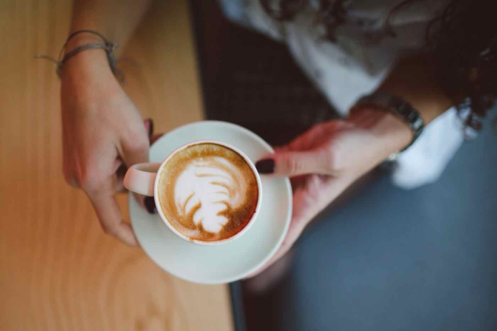
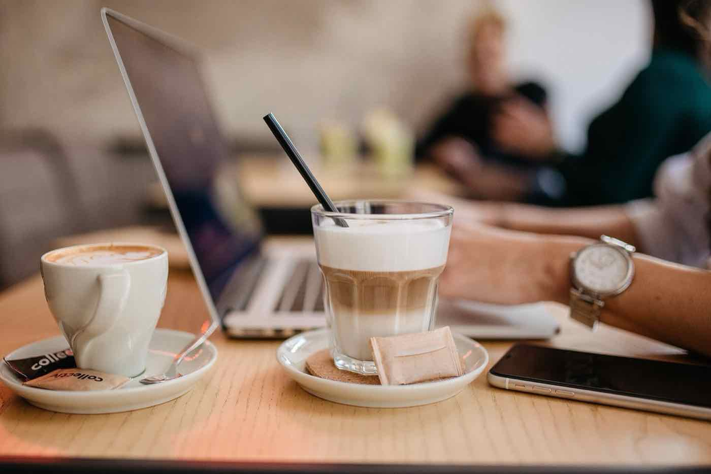
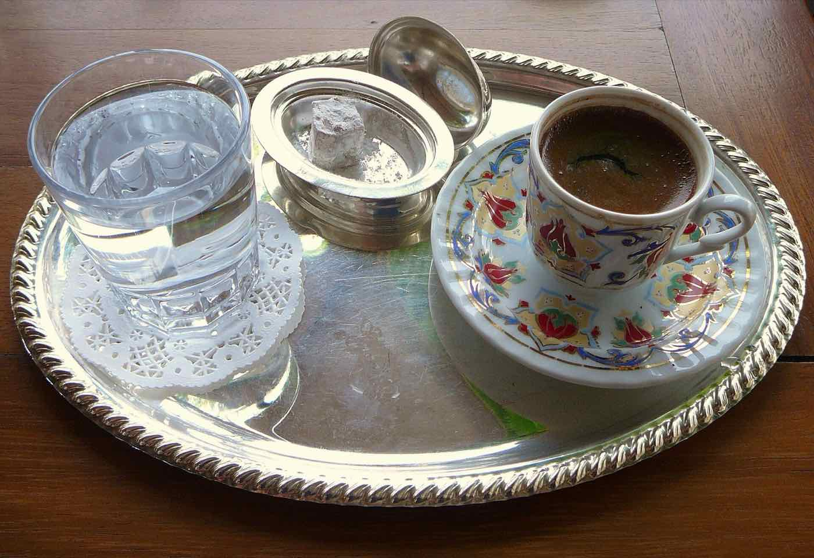
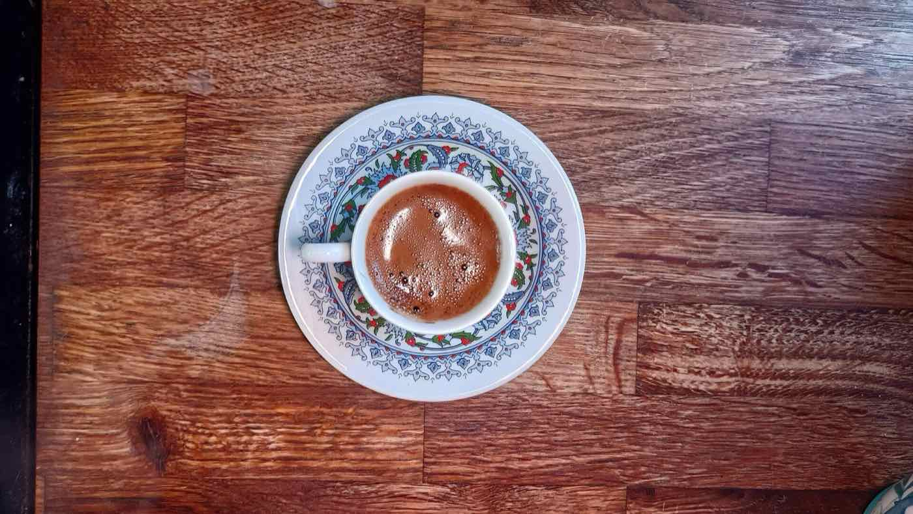

Masadan
Kahve fincanından kareler.



telefon0553 224 86 46
adres
Adresiniz buraya eklenecek · haritada ara
saatler
Açılış ve kapanış saatleriniz buraya eklenecek
Bir kahve molası, sıcak bir tost, biraz sohbet. Gelmeden yazın, masanız hazır olsun.

Kahve fincanından kareler.



Adresiniz buraya eklenecek · haritada ara
Açılış ve kapanış saatleriniz buraya eklenecek